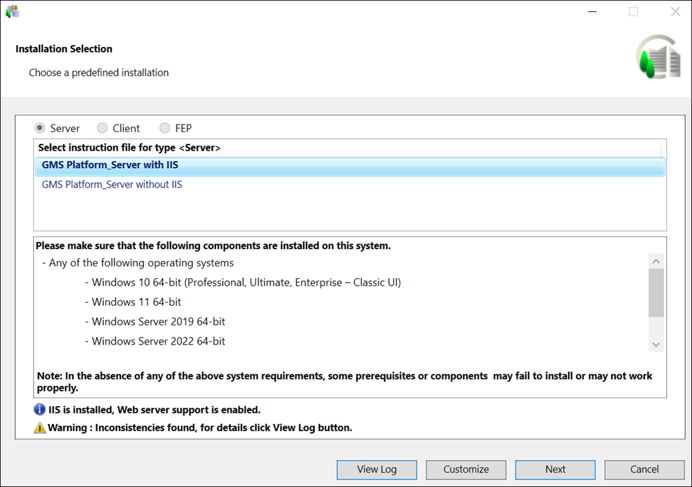
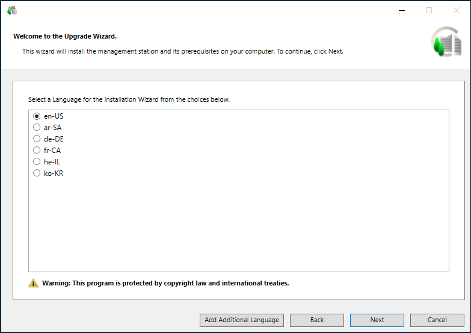
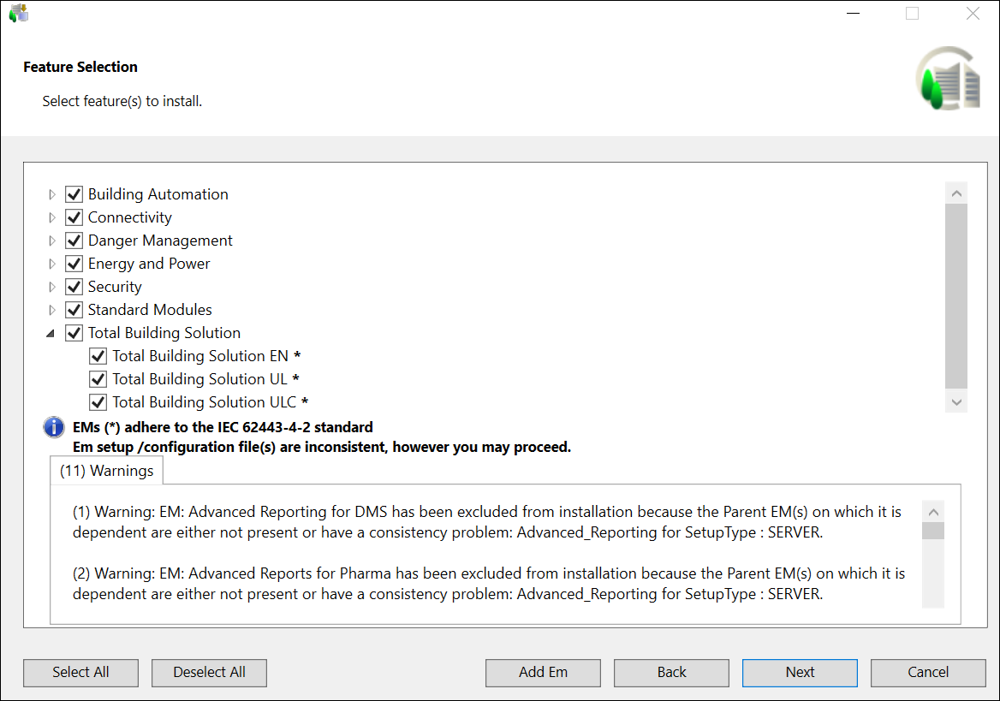

Verify the Installation Selection
- In the Installation Selection dialog box, that displays, proceed as follows:
- Verify that the computer has all listed software installed before clicking Next otherwise, a message displays.
- Even if there are files present for multiple Setup types, the previously installed setup type is selected by default and you cannot modify it.
- If multiple files are available for selection, then select the required file for upgrading the installed setup type from the listed files.
NOTE: Any mismatch between the GMS Platform.xml file and the software distribution is listed in the Warnings section. (See Consistency Check Scenarios). - If all the files in the Instructions folder are corrupted, then they are not available for selection and the Next button is disabled and you cannot work with semi-automatic installation. The Customize button is enabled and displayed only when one of the files available in the Instructions folder contains the value for the tag Customize = True.
For any consistency issues regarding the distribution media, for example, platform (GMS folder) or EM folder, including the post-installations steps, an error or a warning message display in the Installation Selection dialog box and you can view details by clicking View Log. For more information see, Consistency Check Scenarios. - (Optional and required only when you want to install and configure IIS on the installed setup type) Verify that the checkbox for IIS configuration is selected. The checkbox displays only when no IIS component is installed on your machine. Thus, the configuration of IIS settings are automated only if when they no IIS settings are configured already. However, if any IIS component is already installed, a warning message displays informing you to manually configure IIS. (see manually install and configure IIS on the Server/Client/FEP computer in Additional Installer Procedures).
If all required IIS components are already correctly installed and configured, an info message displays and you can proceed with installation. - Click Next to proceed with the semi-automatic installation.
If you clicked Customize, you proceed with the custom installation. 
- By default, the installation language configured in the GMS Platform.xml file is used for installation. However, if the language pack is invalid or not found on the distribution media, then the Welcome to the
Desigo CC Upgrade Wizard dialog box displays, with the default selection as the en-US language or the current OS language. It also lists all the languages whose language packs are valid and available at the path
...\InstallFiles\Languages. You can also add more installation languages using Add Installation Language. - Click Next.

- By default, all the previously installed extensions along with their post-installations steps, if available in the media are upgraded. Along with that, all the extensions that you have configured in the GMS Platform.xml file also get installed during the upgrade process.
However, if there is any inconsistency in the configured extension (for example, the configured extension is inconsistent) or in the post-installation step (for example, the configured post-installation step is not available in the [GMS/EM Name]PostInstallationConfig.xml file) then the Feature Selection dialog box or the PostInstallation Steps Selection dialog box displays, assisting you in selecting the extension or the post-installation step. For more information see, Consistency Check Scenarios.
During upgrade of the Platform or extension, the Post Installation folder is copied to ..\GMSMainProject and the post installation steps are executed from ..\GMSMainProject\PostInstallation\GMS or ..\GMSMainProject\PostInstallation\EM\[EM Name]. Before copying the folder, the existing Post Installation folder is deleted. 
An asterisk (*) displays next to the extension that are IEC62443-4-2 certified in the Feature Selection dialog box.
If all mandatory and non-mandatory extensions are IEC certified, a message "Platform and EMs (*) adhere to the IEC 62443-4-2 standard" displays in the Feature Selection dialog box.
If any of the mandatory extension is not IEC certified, a message “EMs (*) adhere to the IEC 62443-4-2 standard” displays in the Feature Selection dialog box.
If any of the non-mandatory extension is not IEC certified, a message "Platform adheres to the IEC 62443-4-2 standard" displays in the Feature Selection dialog box.
- Additionally, you can also add an extension from the location other than the distribution media using Add EM. It should have a valid folder structure ....\EM\[EM Name]. Ensure that the parent extension of the newly selected extension is also selected. Otherwise, the newly selected extension (child) cannot be added and a warning displays.
It also automatically adds the extension suite for the selected extension, if the extension suite is not listed. If Languages folder is kept parallel to the EM folder, the Installer automatically detects the Language packs for the external extension to be added and add it.
If there are missing extensions during upgrade using semi-automatic installation then the Next button is disabled in the Feature Selection dialog box. You must add the required extensions in order to proceed with the upgrade. - Click Next.
NOTE: If the already installed extension is not available in the software distribution then error displays and you cannot proceed with the installation. 
- By default, all the previously installed languages packs, if available in the distribution media, are upgraded. Along with that, all the new language packs that you have configured in the GMS Platform.xml file also get installed during the upgrade process. However, any inconsistency in the GMS Platform.xml file with respect to Language Pack Name (for example, the LanguagePackName entry is missing or the language name is invalid) or with the Language Pack (for example, Language Pack not present in software distribution) results in displaying the Language Packs dialog box where all the already installed language packs are selected and disabled, by default, thus not allowing you to modify them.
NOTE: Make sure you install only required language packs and extensions, as it adds to the total disk space. All required language packs must be installed before you create a customer project. See Determine the Language Packs and Supported Languages in Obtain and Verify the Software Distribution. - Click Next.